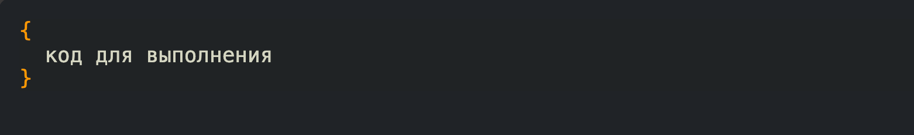
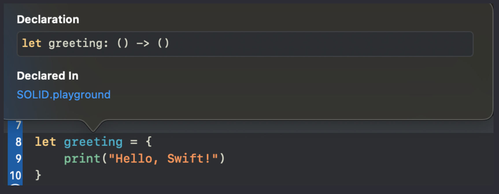
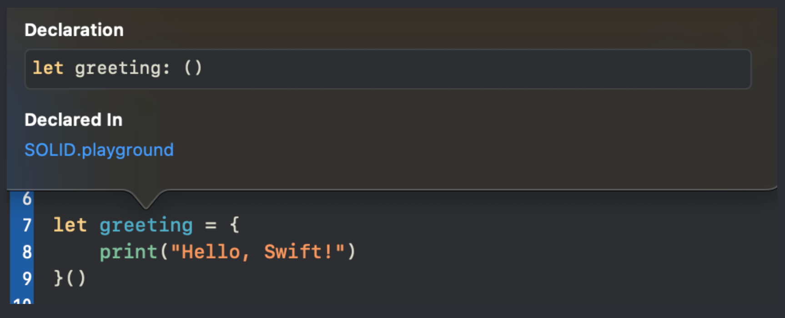
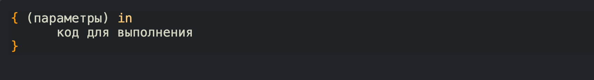
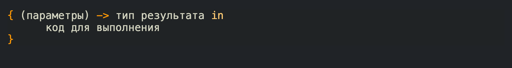
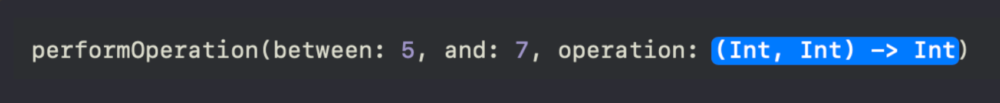
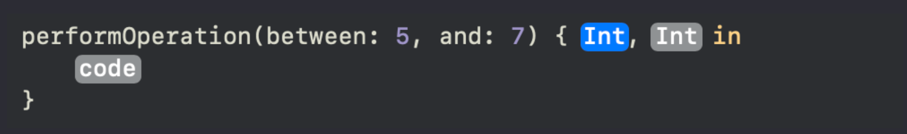
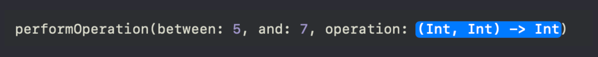
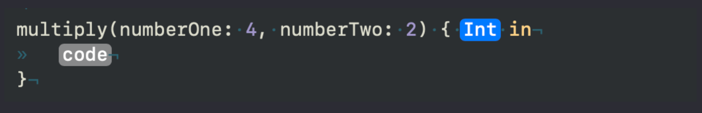

Урок 18. Замыкания (Closures)
1 Марта 2023

Загрузить материалы к уроку.
В этом уроке будет очень много вопросов, на которые желательно ответить, что бы разобраться в теме, и старайтесь не продвигаться дальше, пока не ответите на вопрос.
Эта тема достаточно сложная для восприятия, поэтому запаситесь терпением и свободным временем. Ну а я постараюсь донести ее вам на простом языке.
Блок замыкания, без возврата значения и параметров.
В прошлых двух уроках вы познакомились с функциями, вы теперь понимаете как сделать какое-то действие в нужный момент времени, так вот функция, это частный случай замыкания.
Что же такое closure или блок замыкания? Давайте обратимся к документации Apple. “Это автономные блоки функции, которые можно передавать и использовать в вашем коде.”
То есть это самостоятельный блок, который выполняет какую то конкретную задачу. Звучит знакомо не правда ли? Дело в том что блок замыкания по сути является функцией без имени, с дополнительным функционалом, они могут захватывать значения из окружающего контекста, но об этом чуть позже, а пока давайте разберем что значит функция без имени.
Ниже представлен синтаксис самого простого блока замыкания, который ничего не принимает и ничего не возвращает:
Как вы можете заметить у нас нет ни ключевого слова func ни имени, мы сразу определяем фигурные скобки, внутри которых мы определяем какой то функциональный код.
Давайте создадим свойство, которому присвоим присвоим простой блок замыкания
Если вы посмотрите на тип данного свойства, то вы увидите знакомую сигнатуру:
У данного замыкания нет ни каких параметров, и нет никакого возвращаемого значения.
Помните момент из прошлой лекции про копирование функции. Если мы передавали свойству функцию без круглых скобок, то по факту мы делали ее копию, здесь точно такой же механизм.
По типу данных мы видим что свойство greeting это блок замыкания, воспринимайте его как копию функции, а это значит, что бы вызвать его, нам нужно поставить круглые скобки:
Что бы осмыслить что мы только что сделали, давайте подумаем как бы мы это реализовали с использованием обычной функции:
Оба примера работают одинаково, но разница в том что в случае с замыканием, мы сразу передаем реализацию свойству:
Мы так же можем сразу запустить блок замыкания если после фигурных скобок определим круглые скобки
Как вы думаете, какой тип данных будет теперь у свойства greeting?
Мы вызываем блок замыкания, который ничего не возвращает, а это значит, что свойство greeting будет иметь значение Void:
Это был самый простой блок замыкания. Как вы уже поняли в фигурных скобках так же как и в обычной функции может находится абсолютно любая логика.
Мы можем передавать эти замыкания, хранить их, передавать аргументы как функции и обращаться с ними почти так же, как с любым другим объектом в Swift.

Замыкание принимающее параметры.
Обратимся к синтаксису:
В круглых скобках определяем параметры, после чего ключевое слово in. Это ключевое слово указывает, что объявление параметров замыкания закончено, и тело замыкания начинается.
Давайте сделаем так, что бы наш блок замыкания принимал параметр String, обратимся к синтаксису выше, и реализуем следующий код:
После открывающей фигурной скобки, мы можем определить входные параметры, так же как у обычной функции, а после ключевого слова in логику, в которой можем использовать параметр.
Вызов такого блока замыкания выглядит точно так же как и копия функции, снова приведу пример:
Код будет работать одинаково и вызов выглядит одинаково.
Есть еще один вариант объявить параметры:
Если мы пропишем тип данных замыкания явно, то нам не нужно прописывать тип у параметра в фигурных скобках, такая запись короче и выглядит аккуратней
Название для параметра вы придумываете сами, он должен отражать суть своего содержания.
Давайте посмотрим еще на один пример, но на этот раз с двумя параметрами:
Void это тоже самое что и пустые скобки (), вы можете для себя выбрать то что больше всего нравится, на логику это ни как не влияет, просто иногда круглые скобки заменяют на Void.
Это замыкание принимает в качестве параметров два целых числа, и выводит на консоль их произведение.
Как вы уже знаете есть еще один вариант записи такого замыкания:
На самом деле последний вариант редко используется, в основном прописывают тип явно. Для компилятора не имеет значение как вы объявите блок замыкания, главное что бы были прописаны типы данных, что бы он мог понимать с чем работает.
Ну и давайте посмотрим как бы выглядела функция с точно такой же логикой:
То есть по факту, блок замыкания это безымянная функция, и работает она точно так же, конечно есть некоторые отличия и возможности, но о них мы поговорим чуть позже.
Замыкание возвращающие значения.
Как вы уже поняли замыкание может не только принимать значения, но и возвращать, точно так же как функции.
Обратимся к синтаксису:
Давайте немного изменим наш блок замыкания multiply:
Прежде чем продолжить, подумайте какой тип данных имеет свойство multiply?
Данный блок замыкания будет принимать два целых числа, и возвращать их произведение, и здесь работают точно такие же правила что и в функции, если у вас логика в одну строчку, то компилятор понимает что нужно вернуть произведение, а если у вас объемная логика, то необходимо добавить ключевое слово return.
Давайте посмотрим на реализацию с явно прописанным типом:
Как уже было сказано выше, такая запись предпочтительней.
Рассмотрим еще один пример, он вам покажется сложным, но если вы хорошо усвоили предыдущие темы, то проблем в понимании у вас точно не будет:
Замыкание getEvenNumbers принимает в качестве параметра массив целых чисел, и возвращает массив только с четными числами. Вспомните вариант с функцией и сравните их.
Давайте запустим этот блок замыкания и передадим массив в его параметр.
Чтобы сделать вызов блока замыкания, так же как у функции, мы должны определить круглые скобки:
таким образом свойство evenNumbers будет содержать в себе массив только с четными числами.
Викторина с разъяснениями.
Прежде чем продолжить, давайте проведем небольшую викторину с еще некоторыми примерами, которые требуют разъяснения.
Посмотрите внимательно на следующий closure, и подумайте какой тип данных будет иметь свойство result (постарайтесь ответить на вопрос без помощи компилятора):
Внутри фигурных скобок происходит вычисление суммы двух значений, как вы уже знаете компилятор достаточно умный, вы ему не прописали тип явно, а это значит, что он должен сам его додумать. Он действует логично, смотрит на выражение видит что результат вы ни куда не присваиваете, а это значит его нужно вернуть, поэтому он определит для свойства result следующий тип: () -> Int.
Если мы немного изменим логику, и присвоим результат свойству sum. Какой теперь тип данных будет свойство result?
И снова включаем логику, конкретное значение присвоено свойству sum, компилятор не видит возвращаемого значения, а это значит, что тип данных он определит как () -> (), но если вы напишите ключевое слово return и покажете что возвращать:
То компилятор снова определит тип как () -> Int. Конечно, в такой записи нет смысла, лучше возвращать сразу выражение, чем плодить не нужные дополнительные свойства.
И последний вопрос, на который вы точно знаете ответ. Какой тип данных будет у свойства result в следующей реализации:
Мы запускаем блок замыкания (прописываем круглые скобки после блока замыкания) в момент присвоения свойству, блок замыкания возвращает нам целое число, результат сложения, поэтому свойство result будет типа Int.
Замыкание в качестве параметров.
Так же как и функции, блоки замыканиям мы можем передавать в качестве параметров.
Давайте посмотрим на следующий пример:
Если вы посмотрите на тип данных свойств multiplyClosure и action (зажимаете option и кликаете по свойству, если не срабатывает, запустите компилятор и повторите снова), то это будут абсолютно одинаковые типы данных. И вызываться они будут одинаково:
А теперь давайте обратимся к функции из 16 урока:
Как вы можете заметить тип блока замыкания и функции multiple, подходит к параметру operation, и мы можем, при вызове функции performOperation, передать наш блок замыкания или функцию:
Оба вызова отработают одинаково. В первый раз мы передали блок замыкания, а во второй копию функции. Параметр operation будет вызываться как копия функции или блока замыкания, в зависимости от того что вы передадите в параметр.
Очевидно, что в реальной жизни мы бы хотели целые числа передавать в параметрах:
Теперь мы передаем значения для параметра operation при вызове функции performOperation.
Параметр с типом блока замыкания, лучше определять в конце.
Замыкающие выражения.
Замыкающие выражения, это способ написания встроенных замыканий.
Давайте вернемся к нашей функции performOperation. И попробуем сделать вызов, но немного иначе:
Если вы выделите тип блока замыкания, и нажмете enter, то вам раскроется знакомый вам блок:
это автономный блок замыкания, и вы можете придумать логику “не отходя от кассы”. Если вам нужны входные параметры, то вы их инициализируете:
Как вы думаете какие значения примут свойства numberOne и numberTwo в вызываемой функции? (Подумайте над этим моментом прежде чем продолжить)
Ну а пока вы думаете давайте их сложим в теле блока замыкания, потому что нам нужно вернуть какое то целое число:
Что бы понять какие же значения принимают параметры numberOne и numberTwo, давайте визуально вынесем параметр operation из функции, в том виде как мы его увидели перед раскрытием:
Вы все знаете, что параметры функции являются константами, поэтому этот параметр можно представить как константа:
Как должен выглядеть блок замыкания такого типа?! Очевидно, что у него должно быть два входных параметра:
Это же как раз наш раскрывшийся блок замыкания, не правда ли? и внутри мы можем определить любую логику, главное что бы возвращалось целое число:
Как будет выглядеть вызов этого блока? (Прежде чем продолжить, напишите код самостоятельно)
Мы должны поставить круглые скобки и определить параметры:
Какое значение примет свойство value?
Отсюда можно сделать выводы, когда мы раскрываем параметр с типом блока замыкания он выглядит как блок без самого свойства:
Если здесь все понятно, то давайте теперь вернемся к нашему вызову основной функции:
Таким образом вы можете не передавать в параметр функцию или уже готовый блок замыкания, а реализовать логику здесь и сейчас. Это очень удобно в некоторых моментах.
Если посмотреть реализацию метода, то вы увидите что значения для numberOne и numberTow мы получаем из параметров функции preformOperation, так как мы вызываем блок замыкания с этими значениями.
То есть вызов функции ссылается на ее реализацию:
параметр operation (это блок замыкания, который мы реализуем при раскрытии), при вызове он будет принимать два параметра, в нашем случае это numberOne и numberTwo и возвращать результат.
Соответсвенно numberOne примет значение 5, а numberTwo 7:
И результат работы этой функции мы увидим на консоли: “The result is: 12”
Теперь давайте рассмотрим более простой пример, который очень часто используется в реальной разработке:
Данная функция принимает в качестве параметров два целых числа и блок замыкания, который захватывает целое число. Внутри функции мы находим результат умножения двух чисел и передаем этот результат в параметр closure, таким образом closure как бы захватывает значение и возвращает нам его в блоке замыкания при вызове этой функции:
Когда мы раскрываем блок замыкания, мы получаем тот самый result, и теперь мы можем делать с этим результатом что угодно, например вывести на консоль:
Подумайте какой результат мы получим.
В реальной разработке очень часто стоит задача вернуть данные в блоке замыкания и это значит, что блок замыкания должен захватить нужное значение внутри функции, и когда мы вызываем функцию мы получаем его в этом блоке.
Сокращенные имена параметров.
Каждый параметр в блоке замыкания проиндексирован и мы можем к ним обращаться на прямую через индексы, без ключевого слова in:
Вызов такого блока замыкания будет выглядеть без изменений.
Соответсвенно раскрытый блок замыкания у функции performOperation будет выглядеть так:
Это избавляет от ключевого слова in, хотя, возможно, выражение становится труднее читать, поскольку в этом случае мы не можем назвать параметры. В этом случае разработчик должен решить, выгодна ли краткость функции по сравнению с именованием параметров.
То есть мы не называем параметры перед in, мы просто обращаемся к ним через индексы и знак доллара.
Есть еще много интересных моментов в работе с замыканиями, но на данном этапе этой информации вам будет достаточно. Во втором модуле мы обязательно вернемся к замыканиям и вы узнаете о них чуть больше, поэтому не расстраивайтесь если сейчас не до конца все понимаете, это нормально.
Давайте подведем итог.
Замыкания очень похожи на функции, они так же могут принимать параметры и возвращать какое то значение. В отличии от функции блок замыкания можно раскрыть в параметре функции и реализовать. Так же в отличии от функций, к параметрам замыканий мы можем обращаться через их индексы избегая именования.